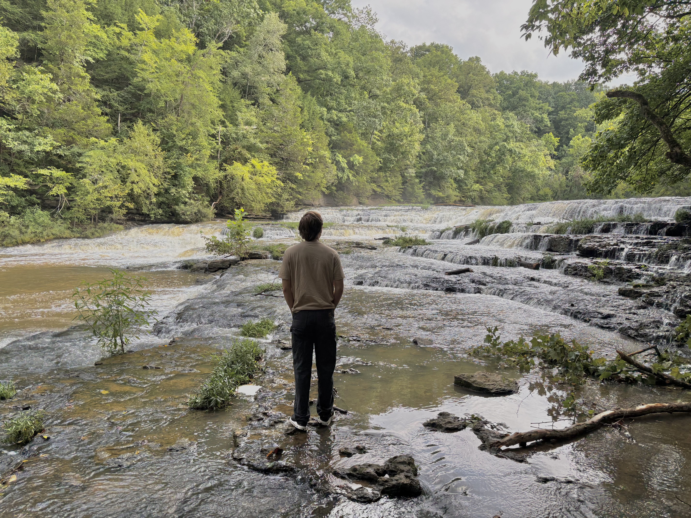

What We Offer
Anthony's Computer Repair Services, LLC offers a wide variety of IT support services to the community of Sarasota.
We specialize in Hardware Repairs,
Screen Replacements,
and IoT installations.


Pricing
We offer various pricing tiers based on the service you are looking for:
Hardware Repairs start at $50 an hour.
Screen Replacements start at $100 per device.
IoT installations start at $125 an hour, plus trip fees.
Contact us for a free quote: anthonyscomputerrepair@hotmail.com +1 (941) 379-4642
Why Us?
Our Story
Anthony's Computer Repair Services, LLC was created as a dedicated local initiative to provide reliable, affordable, and transparent technical support to residents and businesses in the greater Sarasota area. Built on a strong foundation of hands-on technical experience and a passion for modern computing, our mission is to eliminate the frustration of unexpected hardware failures, broken devices, and complex network setups. Whether troubleshooting desktop components, restoring laptops with fresh screens, or integrating smart IoT hardware into your daily workflow, we approach every job with precision, efficiency, and honest communication. We believe high-quality IT service shouldn't come with confusing jargon or hidden fees, which is why we remain committed to delivering dependable diagnostics, fast turnaround times, and friendly, personalized customer service for every project.
About Anthony


Anthony is a CompTIA A+, Network+, &
Microsoft Azure AZ-900 certified IT specialist.
Anthony also writes short stories in his free time.
